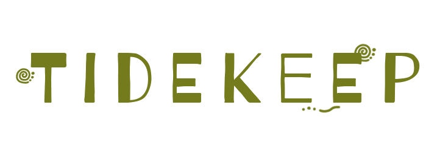
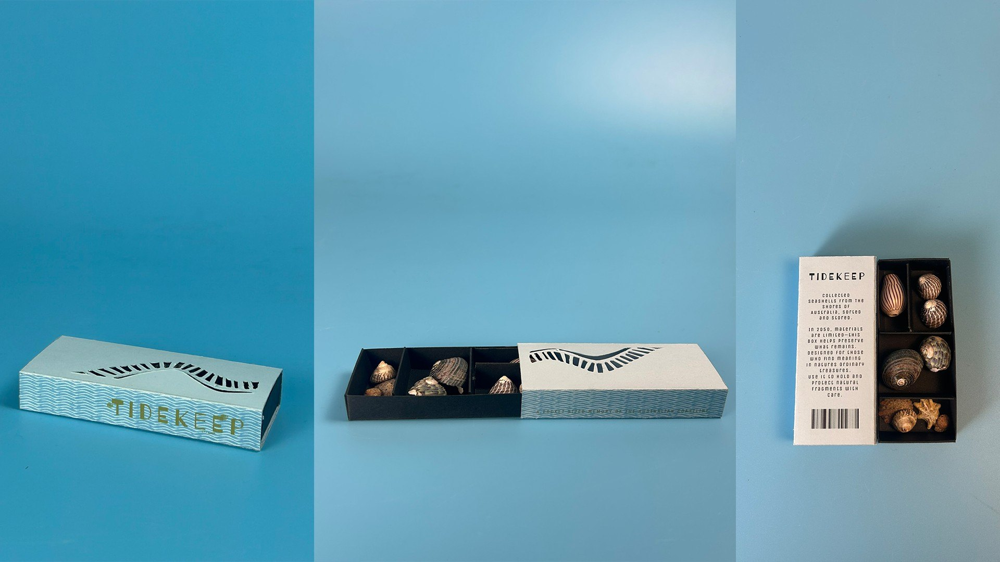
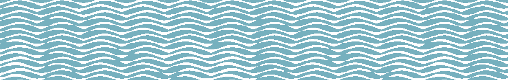

Package design · UNSW Sydney · April–May 2025

A pocket-sized case for found seashells, set in 2050 when materials are scarce. Inspired by collector's trays, it stores, sorts, and cleans what you find.
Every element continues the ocean's patterns so attention stays on the shells. Wave-like halftones wrap the sides, spiral doodles echo shell forms, and the cover's ladder of cut-outs follows the movement of tides and currents.

Tidekeep
Collected seashells from the shores of Australia, sorted and stored.